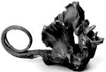
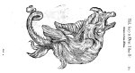

a. Ulisse Aldrovandi, Serpentum et draconum historiae libri duo. Bartholomaeus
Ambrosinus summo labore opus concinnavit. Bononiae, apud Clementem Ferronium, sumptibus M.
Antonii Berniae, 1640. -- (655 A 12).
b. ‘Draakje.’ Vervalsing, gemaakt uit een jonge rog. Lengte: 160 mm,
hoogte: 80 mm. Achttiende-eeuws. -- (Naturalis).
Van alle fabeldieren was de draak misschien wel de meest gezochte. Werd er, vooral in de zoölogische handboeken, veel over hem geschreven, ten slotte werd hij nog gevonden ook, want in de rariteitenkabinetten van de zeventiende en achttiende eeuw kwam er namelijk nog al eens één voor. Een Hamburgse burgemeester beroemde zich zelfs op het bezit van een zevenkoppig exemplaar, dat echter door de beroemde Carolus Linnaeus ontmaskerd werd als een artefact, zodat het de weg ging van alle vervalsingen. Het Leidse curiosum is een wat bescheidener vervalsing. In werkelijkheid is het een jonge rog, waarvan de kop achterover is gehaald, zodat de neusgaten de indruk wekken de ogen te zijn. De vervalser deed met wat insnijdingen de rest.
In zijn boek over slangen en draken uit 1640 had de Bolognese patriciër Ulisse Aldrovandi alles wat hij in de literatuur over dit onderwerp kon vinden bijeengebracht. Men krijgt het idee dat hij niet goed wist wat hij met draken aan moest. Van vervalsingen is hij, in aansluiting op Conrad Gessner (zie nummer 83), zich in elk geval bewust, want twee maal beeldt hij iets af waarvan hij zegt: ‘ex raia effictus’ (uit een rog in elkaar geflanst). En zelfs waarschuwt hij zijn lezers op bladzijde 364 nog: ‘dat vaker en vaker oplichters uit kleine gedroogde roggen een wild beest maken en daarmee lopen te leuren als ware het het lijk van een basilisk [ook een soort draak]’.
| vorige pagina | top pagina |